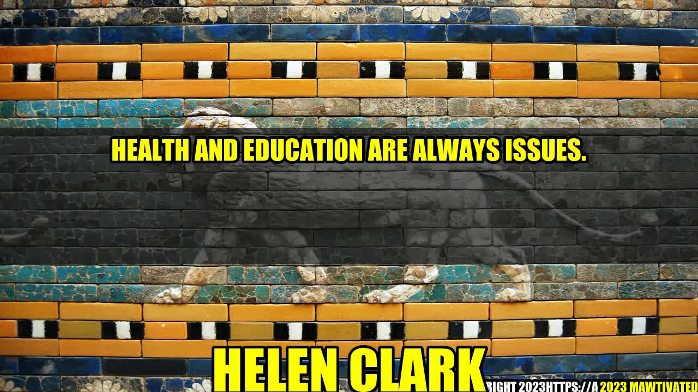

Health and Education: Two Never-Ending Issues

An Inspiring Story
When Sarah, a 12-year-old girl from Uganda, lost her mother to AIDS, her world turned upside down. Her father, who was unable to provide for her education and health needs, sent her to live with her grandmother in a small village. Sarah felt lost and hopeless, until she met a group of volunteers who were running a health clinic and a school in the community.
Thanks to their support, Sarah started attending school and receiving proper healthcare. She learned how to read and write, how to stay healthy and how to dream big. Today, Sarah is a successful lawyer in Kampala, fighting for the rights of children like her and advocating for better access to education and healthcare for all.
Sarah's story is just one example of how health and education are interconnected and vital for individuals and societies to thrive. Without good health, people cannot learn, work or contribute to their communities. And without education, people cannot make informed decisions about their health, care for themselves and their families, or build a better future.
Author - Helen Clark Story
Helen Clark is a former Prime Minister of New Zealand and former Administrator of the United Nations Development Programme (UNDP). She has been a strong advocate for health and education throughout her career, recognizing their transformative power for people and nations.
As Prime Minister, she introduced policies to improve child health and reduce child poverty, and invested in education and skills development. As UNDP Administrator, she championed the Millennium Development Goals, which included targets for health and education, and emphasized the need to address inequalities and empower women and girls.
Today, Helen Clark continues to be a global leader in advocating for sustainable development and social justice, through her work with the Helen Clark Foundation and other organizations.
Why Health and Education Matter
Health and education are always issues, because they are fundamental human rights and essential components of human development. They are also closely linked to other social determinants, such as poverty, gender, race, ethnicity, geography and political systems, that shape people's opportunities and outcomes.
Here are some reasons why health and education matter:
- Good health enables people to live longer, prosper and enjoy a better quality of life. It also reduces health care costs, increases productivity and contributes to economic growth.
- Education empowers people to acquire knowledge, skills, values and attitudes that enable them to lead fulfilling and meaningful lives, make informed choices, participate in democratic processes and build resilient societies.
- Health and education are interconnected: poor health can hinder learning and cognitive development, while lack of education can lead to poor health behaviors and outcomes. They are also linked to poverty, social exclusion and other challenges that limit people's opportunities.
- Health and education are essential components of sustainable development, which aims to balance economic, social and environmental goals for the well-being of present and future generations.
Examples of Challenges and Solutions
Although progress has been made in improving health and education worldwide, significant challenges remain, particularly for vulnerable and marginalized populations. Here are some examples:
- Access to health care: Many people still lack basic health services, such as immunizations, diagnostics, treatments and medicines. This can lead to preventable deaths, disability, poor health outcomes and high costs for households and societies. Solutions include expanding universal health coverage, strengthening primary health care, investing in innovative technologies and partnerships, and addressing social determinants of health.
- Educational attainment: Many children and youth still do not complete basic education or acquire adequate skills and competencies for the labor market and society. This can limit their opportunities, perpetuate poverty and inequality, and hinder economic growth and social stability. Solutions include improving school infrastructure and quality, promoting lifelong learning and skills development, empowering teachers and communities, and fostering innovation and entrepreneurship.
- Health literacy and education: Many people still lack essential knowledge and skills to promote and protect their own health and that of their families and communities. This can lead to preventable diseases, risky behaviors, poor health outcomes and high costs for themselves and society. Solutions include improving health literacy, education and communication, promoting healthy lifestyles and environments, and adopting evidence-based policies and practices.
- Social inclusion and equity: Many people still face discrimination, stigma, violence and exclusion on the basis of their health status, gender, race, ethnicity, disability, sexuality or other identities. This can impair their access to health and education, limit their participation and voice in society, and reinforce existing power imbalances. Solutions include promoting human rights and equality, addressing social and cultural norms and values, empowering marginalized groups, and promoting diversity and inclusion.
"Health and education are two sides of the same coin. You cannot have one without the other. They are essential for people to live fulfilling and meaningful lives, and for nations to prosper and progress."
Conclusion
In conclusion, health and education are always issues, because they reflect the complex and dynamic nature of human development. They require sustained and integrated efforts from governments, civil society, private sector and individuals, to ensure that everyone can access quality services and opportunities, and that no one is left behind. Here are three practical tips:
- Invest in health and education as priority areas of development, and allocate adequate resources and political will to achieve ambitious goals.
- Adopt a holistic and inclusive approach to health and education, that takes into account the social determinants and equity dimensions of these issues.
- Engage stakeholders and empower communities, to ensure that policies and programs are responsive to local needs, and that people can participate in decision-making and implementation processes.
Hashtags, SEO Keywords and Category
Hashtags: #health #education #SDGs #humanrights #sustainability #socialjustice #inclusion
SEO Keywords: Health and Education, Human Development, Sustainable Development, Social Justice, Inclusion
Category: Health and Education, Development, Social Justice
Curated by Team Akash.Mittal.Blog
Curated by Team Akash.Mittal.Blog
Share on Twitter Share on LinkedIn